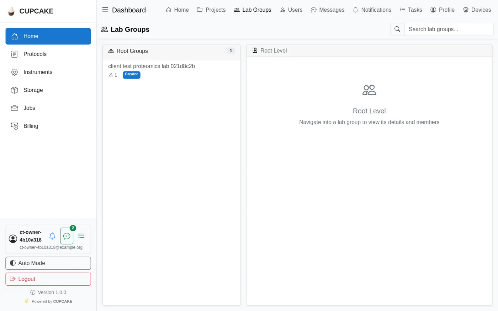

A lab group shares protocols, storage, jobs and metadata among its members. Groups can have sub-groups; open a group to see its sub-groups and members.

- Create Lab Group creates a group, and Create Sub-Group one inside the open group. Allow members to invite others and Allow members to process jobs apply to every member.
- Invite Members invites users; staff can add users directly without an invitation. An invitation is accepted or rejected from its link.
- Permissions gives each member View, Invite, Manage (change the group's settings and permissions) and Process Jobs (run the group's jobs).